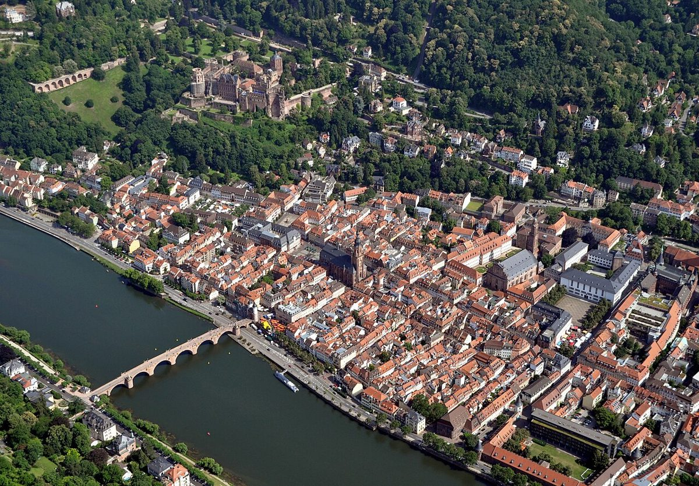

Découvrez la magie de la vieille ville de Heidelberg

Nichée au bord de la rivière Neckar, la vieille ville de Heidelberg, ou Altstadt, est un joyau historique et culturel en Allemagne. Avec ses ruelles pavées, ses maisons à colombages et son ambiance pittoresque, elle attire chaque année des milliers de visiteurs. Voici un guide pour profiter au mieux de votre séjour dans cette ville enchantée.
Comment s'y rendre
Heidelberg est facilement accessible en train, en bus ou en voiture. Depuis Francfort, le trajet en train prend environ une heure, tandis que depuis Stuttgart, il faut compter un peu plus d'une heure et demie. Si vous voyagez en voiture, les autoroutes A5 et A6 vous mèneront directement à Heidelberg. Une fois sur place, la vieille ville est principalement piétonne, ce qui permet de la découvrir à pied en toute tranquillité.
La meilleure période pour visiter
Heidelberg se visite toute l'année, mais le printemps et l'automne sont particulièrement agréables. Les températures sont douces, et les couleurs des arbres ajoutent une touche magique à la ville. L'été est également une bonne période, bien qu'il puisse faire assez chaud et que les rues soient plus fréquentées.
Les incontournables de la vieille ville
1. Le château de Heidelberg : Perché sur une colline, ce château en ruine offre une vue imprenable sur la ville et la rivière. Vous pouvez y accéder à pied ou en prenant le funiculaire.
2. La Hauptstrasse : Cette rue piétonne, l'une des plus longues d'Europe, est bordée de boutiques, de cafés et de monuments historiques. Parfaite pour une balade ou pour faire du shopping.
3. L'église du Saint-Esprit : Située au cœur de la vieille ville, cette église gothique est un lieu de culte et un symbole architectural. Montez dans la tour pour profiter d'une vue panoramique.
4. Le vieux pont (Alte Brücke) : Ce pont historique, qui traverse le Neckar, est un endroit idéal pour prendre des photos et admirer le paysage.
5. Le Philosophenweg : Ce sentier escarpé offre une vue magnifique sur Heidelberg et est un endroit paisible pour une promenade.
Où manger
Heidelberg propose une variété de restaurants pour tous les goûts. Pour une expérience typique, essayez un Gasthaus traditionnel où vous pourrez déguster des plats allemands comme la choucroute ou les saucisses. Les cafés le long de la Hauptstrasse sont également parfaits pour une pause gourmande avec un morceau de gâteau et un café. Pour les amateurs de bière, ne manquez pas de goûter les bières locales dans l'un des nombreux pubs de la ville.
Astuces pratiques
Prévoyez une journée complète pour explorer la vieille ville et ses alentours. Portez des chaussures confortables, car les rues sont pavées et certaines attractions nécessitent de marcher. Si vous visitez en été, apportez une bouteille d'eau et un chapeau pour vous protéger du soleil.
Heidelberg est une ville qui sait charmer ses visiteurs. Que vous soyez amateur d'histoire, de culture ou simplement en quête d'une escapade romantique, la vieille ville de Heidelberg saura vous séduire. Bon voyage !
Haiktec
- 7 Histoires Enchantées pour Endormir Vos Petits Lutins
- Planificateur de Déménagement & Rénovation: Suivi de Budget et Calendrier pour Travailleurs Autonomes
- Mon Petit Potager Autosuffisant : Guide Pratique pour Débutants
Text mit KI erstellt und automatisch geprueft.